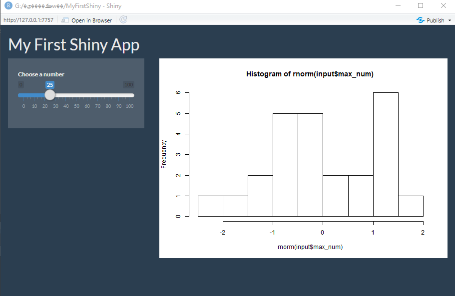
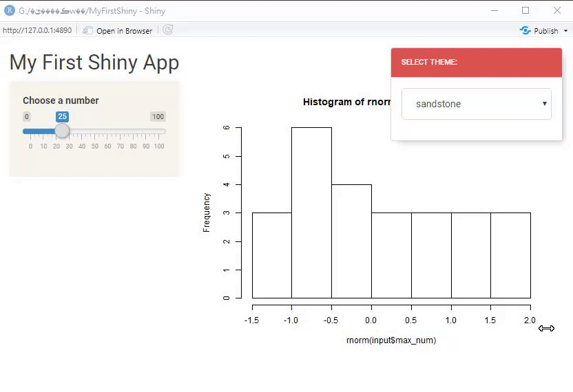

Ch 8 客製化使用者介面
在之前的章節，我們透過使用者介面設計 (含輸入 Ch. 4 與輸出 Ch. 5)、伺服器端程式設計 Ch. 6以及部屬上線 Ch. 7 等三個步驟完成Shiny App的製作與上線，但Shiny App也提供許多客製化設定的功能，包括使用者介面 (本章節)，儀表板設計 Ch. 9，以及叫用另外的程式碼檔案 Ch. 2.4、JavaScript函式庫 Ch. 4 等。此外，我們也可在上線前測試Shiny App的介面與效能 Ch. 12 ，以免程式效能不佳影響使用者體驗。
8.1 樣式模板
若想改變Shiny App的外觀，安裝shinythemes(Chang 2018)套件，可輕鬆的將內建的Bootstrap模板套用在你所開發的Shiny App中，shinythemes套件的模板多來自Boostwatch網站，可直接去該網站查看所有模板。
要使用shinythemes套件，依照R套件的使用原則，第一次使用必須先安裝install.packages()再載入library()，未來只需再次載入即可
在完成shinythemes套件的安裝與載入後，即可在Shiny App中套用樣式模板，套用方式是在使用者介面（前端）的頁面設定函數，如fluidPage()中，增加一參數theme = shinytheme("樣式名稱")，樣式的名稱可在Boostwatch網站查看。
以下以superhero樣式為例，在使用者介面（前端）ui的fluidPage()函數中，增加一行theme = shinytheme("superhero"),：
ui <- fluidPage( #頁面設定函數
theme = shinytheme("superhero"),
titlePanel("My First Shiny App"), #標題版面(panel)
)可執行的完整範例程式碼：
ui <- fluidPage( #頁面設定函數
theme = shinytheme("superhero"),
titlePanel("My First Shiny App"), #標題版面(panel)
sidebarLayout( #版型(layout)
sidebarPanel( #側邊欄位版面(panel)
sliderInput( #輸入元件函數
inputId = "max_num",
label ="Choose a number",
min = 0, max = 100,
value =25
)
),
mainPanel(
plotOutput("hist")
) #主頁版面(panel)
)
)
server <- function (input,output){
output$hist<-renderPlot( {
hist(rnorm(input$max_num))
} )
}
shinyApp(ui = ui, server = server)在沒增加theme = shinytheme("superhero"),之前，原輸出樣式為：

加了theme = shinytheme("superhero"),參數後的樣式：

執行像上述修改為深色基底的程式碼時，會發現圖片還是白底為主，若覺得這樣不妥，可加上shinyOptions(plot.autocolors=T)設定，不過這個功能在下個版本才會正式上線。
若無法馬上決定樣式，想更進一步看到各種樣式模板使用後的應用程式外觀，可在UI的頁面設定函數中加上一參數themeSelector(),，啟動樣式選擇器，當然在使用前也需載入shinythemes套件。
在下方可執行的完整範例程式碼中，頁面設定函數fluidPage()的第一個參數即為樣式選擇器：
ui <- fluidPage( #頁面設定函數
themeSelector(), # 樣式選擇器
titlePanel("My First Shiny App"), #標題版面(panel)
sidebarLayout( #版型(layout)
sidebarPanel( #側邊欄位版面(panel)
sliderInput( #輸入元件函數
inputId = "max_num",
label ="Choose a number",
min = 0, max = 100,
value =25
)
),
mainPanel(
plotOutput("hist")
) #主頁版面(panel)
)
)
server <- function (input,output){
output$hist<-renderPlot( {
hist(rnorm(input$max_num))
} )
}
shinyApp(ui = ui, server = server)執行上述程式碼即可開啟樣式選擇器:

網路上還有許多套件可讓使用者快速套用已設計好的樣式，如：
- shinymaterial : 讓使用者可應用Google’s Material design概念與元件，可至官網查看套用效果
- RinteRface推出的各種套件，如
shinyMobile GitHub連結 : 提供製作適合手機使用的Shiny App模板：
8.2 R -> HTML
撰寫中
此部分建議比較熟HTML或是想要學HTML的使用者閱讀。
8.2.1 HTML 101
8.2.2 在R中撰寫HTML
tags
A list of functions
www folder
8.3 CSS
撰寫中
code cademy css leasson
CSS教材 在Shiny App使用CSS 1. 使用css file (放在專案資料夾中的www資料夾) 2. 在header中直接撰寫css 3. 在每個tag中分別撰寫css
Tag -> Class -> id
8.3.1 Bootstrap and Sass
CSS framework
sass
bootstraplib
References
Chang, Winston. 2018. Shinythemes: Themes for Shiny. https://CRAN.R-project.org/package=shinythemes.